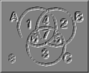

|  |
From SMTP discussions from the following contributors :
|
|
I'm not really too concerned about grading excercises over the Web,
although other instructors who might be interested in the system might
be. I base my grades entirely on in-class exams. I just use the Web
pages as an extra resource for students. Of course, even with this in
mind a program that corrected exercises for students would be great.
By the way: I've been getting messages from people out on the net who
have found my critical thinking Web pages and used them to supplement
the material they have been assigned in similar courses. At least one
instructor has used some of my exercises in his class. If half a
dozen people send me a message saying how helpful they found this
material, how many have actually used it? One thing I would like to
do is get a counter up on some of this stuff.
Back to current business: for this fall, I would be tickled pink to have a program available that could pull examples from a file, present them, let the student work them, and then either display the correct solution from a file or actually check the student's work on the fly. As I said, I don't care about the bookkeeping right now.
|
|
Good. Sounds like this will be easier in the short run then. Don, when
you get a chance to go take a look at the venn program think about
what we need to add for a student to be able to use it. Currently the
class names are passed to the java program as parameters. Perhaps we
want to pass sentences. I'm not sure. If the typical excercise is
translation and then validation we need to add the ability to
translate.
|
|
I'm not sure we want to use "existential quantifier" in the Venn
Diagram program because this isn't a term we usually use when we
present this material. I think "constant" and "variable" would be
better choices. But that's minor. Another problem I see is that
whenever I check either box, the corresponding letter shows up in
area 8. This shouldn't happen. And I don't see any way to remove
a letter. Of course, you can clear and start over, but it would
be nice if clicking on an area of the diagram would toggle the
active process on and off. I also found I could check both "individual"
and "existential quantifier" at the same time. I suggest these should
be radio buttons.
Actually, there are four operations that I want students to be able to perform on a diagram: shade an area, add a constant to an area, add a variable to an area, and cross out a constant in an area. Crossing out a constant is not the same as erasing it. Suppose we are told that Socrates is a mortal, but then we learn he is also Greek. The first piece of information prompts us to put a constant in each subarea for mortal; the second prompts us to cross out the constants in the subarea for Greeks. I don't want the constant to be erased; I want to know that it was put there when the first piece of information was processed. So we need a "strike out" function - but only for constants. The only way a variable can be struck out of an area is if we shade the area. So can you set up radio buttons for four functions: shade, add constant, strike out constant, and add variable? And it would help if all the functions actually toggled so they could erase errors without starting over. I don't think we need a translation capability in the first version, but I do want the students to label the diagrams themselves. An important part of an exercise is figuring out which nouns/adjectives in the English sentences represent the significant classes for the diagram. So we need three fields where they can enter the names for the classes. Once we get all this, we can think about how to incorporate it into an exercise. We want to be able to check student input for correctness and to provide possibly canned explanations for examples. Let's work on the input screen first. We need a place on the screen where the English text can be displayed. Can you guys have all this by last Monday?
|
Explain this further. I tried to figure out a good way to do this and came up blank.>And I don't see any way to remove a letter. Of course, you can >clear and start over, but it would be nice if clicking on an >area of the diagram would toggle the >active process on and off.
>I also found I could check both "individual" and "existential >quantifier" at the same time. I suggest these should be radio buttons. I was going to grey one out if the other were checked. Radio buttons would save a keystroke though. a strike out function could be a sub-checkbox on the constant group.>Actually, there are four operations that I want students to be able >to perform on a diagram: shade an area, add a constant to an area, add >a variable to an area, and cross out a constant in an area. Crossing out >a constant is not the same as erasing it. Suppose we are told that >Socrates is a mortal, but then we learn he is also Greek. The first piece >of information prompts us to put a constant in each subarea for mortal; >the second prompts us to cross out the constants in the subarea for >Greeks. I don't want the constant to be erased; I want to know that it >was put there when the first piece of information was processed. So we >need a "strike out" function - but only for constants. The only way a >variable can be struck out of an area is if we shade the area. I dont understand the toggle concept. You mean have a check box that if "on" would remove a variable or constant in the selected segment? How to know which variable or constant if there are more than one?>So can you set up radio buttons for four functions: shade, add constant, >strike out constant, and add variable? And it would help if all the >functions actually toggled so they could erase errors without starting >over.
Yeah. Vic, Girish and I talked about that a little already. We thought about implementing that in java as a cgi program. Or alternativly we could do it in the same progam but have a "first" screen in the applet with 3 entry fields for the 3 classes and a submit button.>I don't think we need a translation capability in the first version, but I >do want the students to label the diagrams themselves. An important part >of an exercise is figuring out which nouns/adjectives in the English >sentences represent the significant classes for the diagram. So we need >three fields where they can enter the names for the classes. its already shrink wrapped.>Once we get all this, we can think about how to incorporate it into an >exercise. We want to be able to check student input for correctness and >to provide possibly canned explanations for examples. Let's work on the >input screen first. We need a place on the screen where the English >text can be displayed. Can you guys have all this by last Monday?
|
|
The lines connecting letters in the diagrams isn't necessary. I thought it
might help the students keep track of things, but in fact I now think it
makes the diagrams just damn too messy. I plan to leave this out when I
teach Venn diagrams this fall.
|
BUGS! WHERE!!! There were NO bugs in that code ....unless you guys introduced them :)>There have been some major revisions to the Venn diagrammer code! >These modifications include the new grid layout (thanks to Girish), a few >bug fixes,
do you plan to use the classes Java provides to do the parsing?>and the html changes. There were also a few new methods to facilitate >the passing parameters into the applet for a `prefered marking' . . . >Each circle can be given a label. Each region that has a marking would be >mentioned by name, e.g., region1, region2, ..., region8. A marking would >be a comma seperated variable string using the atomics: shaded, a, b, c, >!a, !b, !c, x, y, z. Given the way the applet currently works, a region >can have at most 3 segment variables, e.g., constants, negated constants >or variables. the overall validity would be marked true or false. sounds perfect ...>if this is acceptable I will modify the venn1 applet class to check for >hese parameters, record those passed, and display a canvass with the >preffered marking in the bottom right corner of the grid. This way we can >begin to create html for additional exercise sets.
not sure what you mean here...if you wanna see how to hide panels take a look at the code that makes the "variable" - "constant" panels switch....>What sort of widget >should be used to show/hide the `solution' canvass? perfect ...>Can we use the `submit' push button (appropriately relabled) ? then we can use the remaining two parameters to pass in pictures on me.... that we display when the student gets the correct answer ....>BTW, if we use a single parameter for the text of the exercise, we could >use a `word wrapper' to chop the strings to fit in the text window. |
> There have been some major revisions to the Venn diagrammer code! > > These modifications include the new grid layout (thanks to Girish), a few > bug fixes, and the html changes. There were also a few new methods to > facilitate the passing parameters into the applet for a `prefered marking' > . . . > > Each circle can be given a label. Each region that has a marking would be > mentioned by name, e.g., region1, region2, ..., region8. A marking would > be a comma seperated variable string using the atomics: shaded, a, b, c, > !a, !b, !c, x, y, z. Given the way the applet currently works, a region > can have at most 3 segment variables, e.g., constants, negated constants > or variables. the overall validity would be marked true or false. |
Do !a, !b, and !c mean a, b, and c, respectively, "crossed-out"?
This looks fine. Of course, we would eventually like a tool that lets the instructor solve the problem and then generates the above code automatically. But I can write this stuff without much effort.> So for example the applet tag for > > http://ai.uga.edu/~bancroft/venn/set-one/vennx10.html > > might be > > Maybe relabel it `Solution' and make it toggle so the student can reveal/hide/reveal/hide/rev.... you get the idea> If this is acceptable I will modify the venn1 applet class to check for > these parameters, record those passed, and display a canvass with the > preffered marking in the bottom right corner of the grid. This way we can > begin to create html for additional exercise sets. What sort of widget > should be used to show/hide the `solution' canvass? > > Can we use the `submit' push button (appropriately relabled) ?
I prefer this if it's not a big problem.> BTW, if we use a single parameter for the text of the exercise, we could > use a `word wrapper' to chop the strings to fit in the text window. Lookin' better and better. |
Yeah, I mentioned this before.> > BUGS! WHERE!!! There were NO bugs in that code ....unless you guys > > introduced them :) > Sad but true . . . you could add the same constant or variable to a region > multiple times . . . OH YEA, that is not a bug, just an inconvenience > since you could simply clear the region and remark it !-8) > > Do !a, !b, and !c mean a, b, and c, respectively, "crossed-out"? > Yes, it is sort of a c/c++/java style syntax, but It would be easy to > also allow ~a, ~b, ~c as aliases for the crossed-out constants . . . |
|
There are two new sets of exercises defined :
Four
and
Five
Please review these markings bearing in mind that the constants will
change one more time to match the recent revisions allowing a-t for
constant symbols . . .
BTW, Anyone interested in havin a -theory- oriented meeting next week ???
|
| Last modified | Comments and suggestions : | Return to Dr. Nute's | |
| 08/30/98 | dnute@ai.uga.edu |
venn diagram |
class materials. |